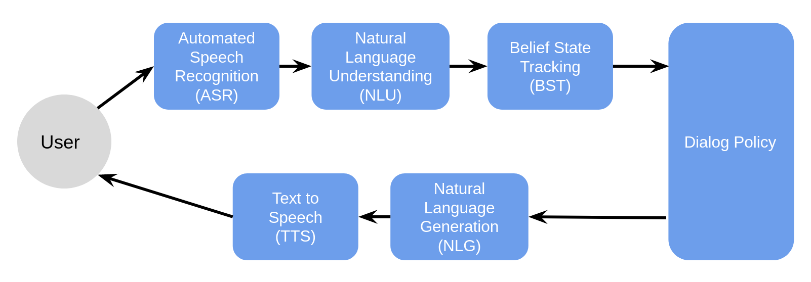

You can find the Jupyter Notebook in our GitHub repository.
Introduction to Dialog Systems¶
Dialog Systems¶
At it's simplest, a dialog system is a computer program with which humans can talk. As technology has improved, dialog systems have become more popular and more complex. They include everyday personal assistants such as Siri, Alexa, or Google Home, as well as more specialized systems like those you might encounter if you call your bank, or need to chat with an online customer service agent. Dialog systems even include some which try to mimic more natural human conversations and have the ability to discuss about "open-world" topics rather than being limited to specific domains.
Task oriented v. Chatbot Systems¶
Chatbot Systems¶
Chatbot systems have been around since 1964 when Joseph Weizenbaum created the ELIZA chatbot system, a virtual therapist that could hold a conversation by mirroring back user utterances (eg. http://www.med-ai.com/models/eliza.html if you want to test it out). The main goal of chatbot systems is to create an experience that engages a user. Conversations do not need to be about any one topic in particular and can wander from topic to topic without trying to fulfill any type of concrete goal. Often, these systems work to form some type of emotional bond with the user and their success is measured by how long a user is willing to talk with the system (usually measured in turns). One of the most advanced chatbot systems currently available is Microsoft's XiaoIce with whom user's have kept a single conversation going for more than 24 hours (7,000 turns).
Task Oriented Dialog Systems¶
In comparison to chatbot systems, task oriented dialog systems seek to help the user accomplish a defined goal as efficiently as possible. These types of goals could include things such as finding a suitable restaurant, resolving a customer service complaint, or even just registering a new credit card. These systems are generally much more limited in scope than chatbots, but have been gaining popularity commercially as a way for companies to offer a more interactive/efficient/flexible interface for users than traditional websites/customer service telephone lines. Task oriented dialog systems are generally evaluated by how few turns it takes to complete a dialog and how frequently a user is able to accomplish their goal.
The remainder of this tutorial will focus on task oriented dialog systems.
Domains in Task Oriented Dialog¶
A domain here refers to the specific type of task that a task oriented dialog system handles. For example, a "restaurant" domain system could help a user find a restaurant to have dinner at. A "lecturer" domain system might help a user locate which lecturer is in charge of eg. coordinating the Erasmus program and it could then provide information about that lecturer's office hours or email address.
Normally the topics which can be discussed in a domain are defined in an ontology and the knowledge about entities in a domain is stored in a database.
Modular Dialog Systems¶
There are two main strategies when it comes to designing a dialog system: 1) using a neural model to directly map the sequence of words in the user utterance to a sequence of words for a system utterance. Or 2) breaking up dialog processessing functionality into a series of modules where each module is responsible for a step in the processing pipeline. The first approach is more common in chatbot type systems, while the second is more common in task oriented dialog systems. The general modules included in a task oriented dialog system are listed below and a brief overview of their functionality is provided:

-
ASR: The Automatic Speech Recognition (ASR) module is optional. It converts a spoken user utterance to text in the case of a spoken dialog system.
-
NLU: The Natural Language Understanding (NLU) module is responsible for mapping the natural language (text) user utterance to a semantic frame (machine readable) version.
-
BST: The Belief State Tracker (BST) is responsible for keeping track of information the user has provided up to the current turn in the dialog.
-
Policy: The Policy is responsible for deciding the next action the system should take based on the current system belief state.
-
NLG: The Natural Language Generation (NLG) module is responsible for converting the machine readable (semantic frame) representation of the system's next action into a natural language representation.
-
TTS: The Text To Speech (TTS) module is again optional and used in a spoke dialog system to convert a text based system utterance into speech.
It is also important to note that the functionality of these modules can be combined. These modules may additionally be rule-based or machine learning-based and a dialog system can be made of a combination of rules based and machine learning based modules. In the case of machine learning-based modules, depending on the architectures, modules may be trained independently or jointly.